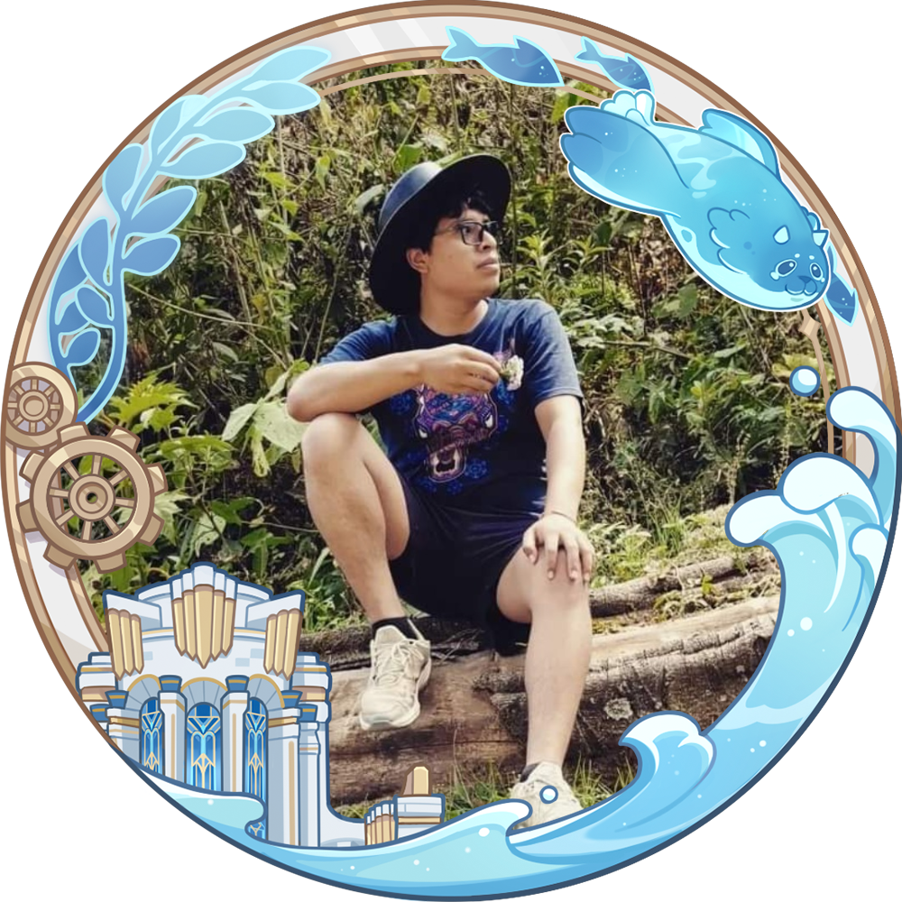

¡hola! soy ALFREDO NOLASCO
Y QUIERO CONVERTIRME EN UN DESARROLLADOR DE SOFTWARE
Ingeniero en comunicaciones y electrónica, estudiante de ORACLE one, mi conocimiento en electrónica me ha permitido desarrollarme en mantenimiento de computadoras e instalación de programas diversos, al uso de paquetería office, desarrollo de aplicaciones, así como en programación, instalación y reparación de equipo de radio y radio bases.
Formación académica
Ingenieria en comunicación y electrónica
Instituto Politécnico Nacional | julio 2017 - mayo 2022
Experiencia
- Apoye en el diseño, instalación y programación de radio bases para el tramo 1 y 5 del tren maya, para la autopista Compostela – Vallarta, para el aeropuerto de Nayarit y para la vía férrea Coatzacoalcos – palenque.
- Realice instalaciones de radios moviles en maquinaria y automóviles
- Realice reparacion y programación de radios portatiles motorola
- Realice armado de computadoras, asi como su mantenimiento preventivo
conocimientos en:
| Inglés B1 | JavaScript |
| Java | HTML5 |
| CSS3 | C++ POO |